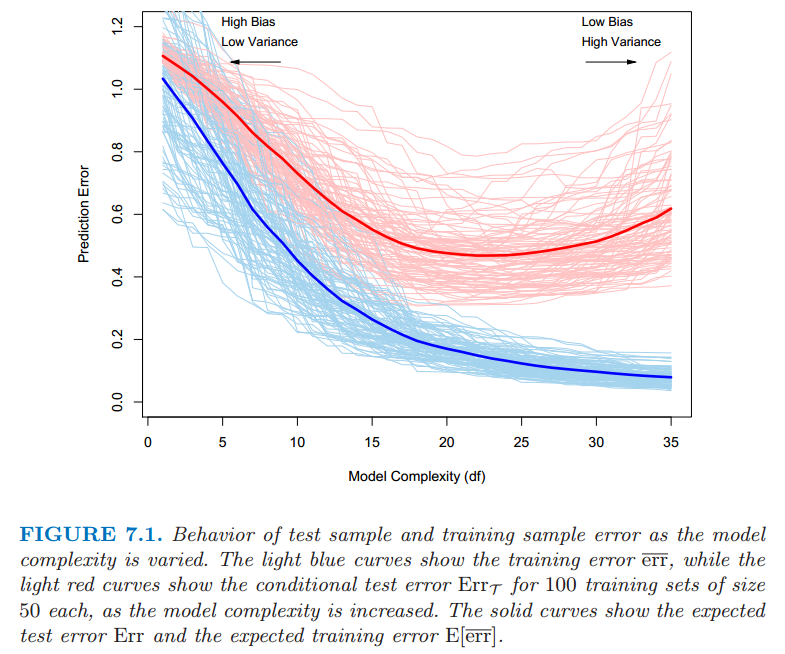
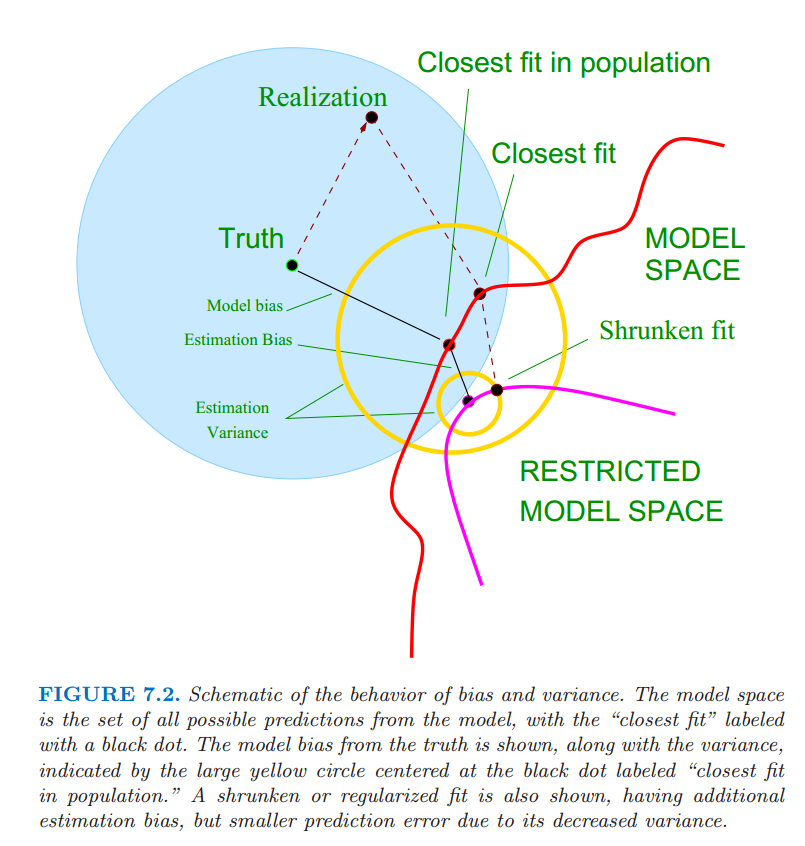

Chapter 7: Model Assessment and Selection
- Introduction
- Bias, Variance and Model Complexity

- The Bias-Variance Decomposition

- Example : Bias-Variance Tradeoff
- Optimism of the Training Error Rate
- Estimates of In-Sample Prediction Error
- The Effective Number of Parameters
- Also known as effective degree of freedom $= trace(S)$, where $\hat y=Sy$.
- The Bayesian Approach and BIC
- Minimum Description Length
- Vapnik-Chervonenkis Dimension ☠
- Cross-Validation 👍
- K-Fold Cross Validation
- The Wrong and Right Way to Do Cross-validation
- Does Cross-Validation Really Work?
- Bootstrap Methods
- Conditional or Expected Test Error? ☠
Chapter 8: Model Inference and Averaging
- Introduction: Provides a general exposition of maximum likelihood approach and the Bayesian method of inference.
- The Bootstrap and Maximum Likelihood
- A model-free, non-parametric method for prediction.
- Bayesian Methods
- Relationship Between the Bootstrap and Bayesian Inference ☠
- The EM Algorithm
- The EM algorithm in General ☠
- MCMC(Markov Chain Monte-Carlo) for sampling from the Posterior
- Bagging
- Stochastic Search : Bumping
- Generalized Additive Models
- Provides an extension to linear models, making them more flexible while retaining much of their interpretability.
- Tree Based Methods
- Regression and Classification trees.
- Gini index and Cross Entropy loss
- Overfitting
- Lack of smoothness
- PRIM(Patient Rule Induction Method) : Bump Hunting
- MARS: Multivariate Adaptive Regression Splines
- Hierarchical Mixture of Experts
Chapter 10: Boosting and Additive Trees
- Boosting Methods
- Combines the output of many “weak” classifiers to produce a powerful “committee”.
- AdaBoost
- Boosting Fits an Additive Model
- “Off the Shelf” Procedures for Data Mining
- Boosting Trees
- Numerical Optimization via Gradient Boosting
- Regularization
Chapter 11: Neural Networks
- Projection Pursuit Regression
- Neural Networks
- Fitting Neural Networks
- Issues in Training Neural Nets
- Initizlization
- Overfitting
- Scaling of the Inputs
- Number of hidden units and layers
- Multiple Minima
- Performance comparion
- Computational Considerations
Chapter 12: Support Vector Machines and Flexible Discriminants
- The Support Vector Classifier
- maximizing margin.
- Computing the Support Vector Classifier ☠
- Support Vector Machines and Kernals
- Computing the SVM for Classification
- The SVM as a Penalization Method
- Function Estimation and Reproducing Kernals ☠
- SVMs and the Curse of Dimensionality
- A Path Algorithm for the SVM Classifier ☠
- Support Vector Machines for Regression
- Regression and Kernals
- Generalizing Linear Discriminant Analysis
- Flexible Discriminant Analysis
- Penalized Discriminant Analysis
Chapter 13: Prototype Methods and Nearest-Neighbors
- Prototype Methods
- K-means Clustering
- Learning Vector Quantization
- Gaussian Mixtures
- k-Nearest-Neighbors Classifiers
- Adaptive Nearest-Neighbors Methods